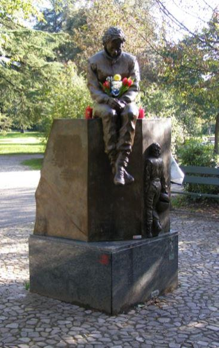
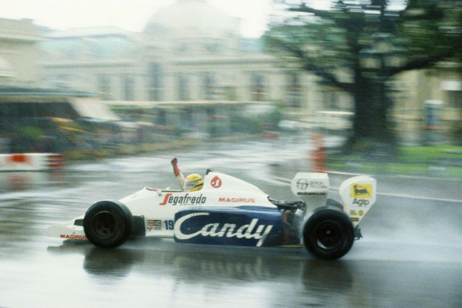
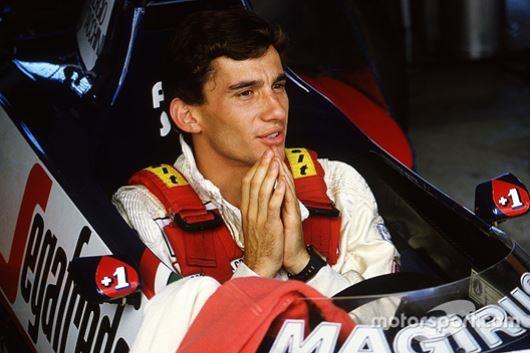

À l'été 2018, j'ai contacté Irvin Pillaca, le réalisateur qui avait collaboré avec moi pour deux autres œuvres, afin de réaliser un film à la mémoire de Ayrton Senna. Irvin est péruvien et vit en Italie depuis de nombreuses années, à la mort de Ayrton il avait quatre ans.
À la fin des années 90, je voyais plusieurs enfants jouer à Imola autour du monument dédié à Ayrton, près de la piste. Je me demandais ce que ces enfants auraient pensé de lui après vingt ou vingt-cinq ans. Je ne pouvais pas me donner de réponse mais maintenant ma réponse est la suivante : tout le monde connaît son nom, mais la pensée de Ayrton, son humanité, sa générosité et son courage de lutter contre certains systèmes ... tout cela a été confronté à de nombreux obstacles, notamment dans ces quelques dernières années.
Quand on s'est souvenu du grand pilote brésilien à Imola, en mai 2014, il y avait plusieurs jeunes qui parlaient de lui avec enthousiasme. Les parents de Roland Ratzemberger, le pilote décédé sur la même piste le 30 avril, étaient venus de l'Autriche.
Leur intervention était vraiment émouvante. Aux côtés des journalistes Zermiani, Schittone et Turrini, qui a présenté son livre « En voyage avec Ayrton », Dino Zoff était également présent, qui a toujours aimé les courses automobiles et en tant que jeune garçon lui-même disputait des compétitions. Malheureusement, en seulement cinq ans, tant de valeurs morales et sportives, que Ayrton soutenait, ont été écrasées par les médias, les politiciens, et partant, par les personnes, de plus en plus éloignées de la générosité, de la solidarité et de la lutte pour les idéaux. Nous avons commencé à travailler sur le film à la mémoire de Ayrton fin octobre 2018 sur le circuit de Monza et au début de 2019, nous nous sommes rendus sur le circuit de Imola. Je remercie tout le monde pour les autorisations accordées pour le tournage. Je suis l'auteur du scénario et j'ai pris en considération le Grand Prix de Monaco du 1984, le 06 juin 1984.
Il pleuvait beaucoup, Monaco était une forêt tropicale ce jour-là, une pluie vraiment impressionnante, mais la course fut arrêtée seulement à la fin du 31ème tour. Il y avait des pilotes de grande importance, mais tous à un moment ont été bloqués par ce déluge, nous nous souvenons de Lauda, Mansel et Patrese, pour n'en nommer que quelques-uns. C'est lors de cette course que Ayrton s'est fait connaître au volant de la Toleman, motorisée Hart, il a continué avec détermination malgré les circonstances difficiles.
Un autre garçon a continué avec courage, Stefan Bellof, au volant de la Tyrrell-Ford Cosworth, mais Stefan n’a pas pu s’exprimer et s'épanouir, il meurt l’année suivante, le 1er septembre 1985, en tentant de dépasser Jacky Ickx au 1000 km de SPA, s'est écrasé contre le mur à 260 km/h. Nous avons terminé le tournage fin mai 2019, avec Irvin et la réalisatrice adjointe Candy Carmona, nous avons cherché des nouvelles idées semaine après semaine, d'un mois à l'autre, et nous les avons trouvées. Le gentil Alessandro Crippa, propriétaire d'un magasin près du circuit de Monza, a joué dans notre film et qu'avait-il dans son magasin ? Un morceau d'aileron de la voiture de Ayrton de 1984, un morceau dont il est à juste titre jaloux.
Il y avait quelques beaux bâtiments, près de la piste de Monza, presque tous disparus, il reste un dernier beau bâtiment « à taille humaine », avec des peintures murales d'artistes siciliens, exprimant la joie, le bonheur et l'enthousiasme pour la Formule 1, les couleurs de la voiture de Senna ont également résisté, les peintures murales ont été exécutées juste en 1984 et là-bas nous avons fait quelques tournages.
Le film commence par le souvenir du Grand Prix de 1984, une année que l’on retrouve à diverses occasions, puis se succèdent des témoignages très intéressants. Nous avons eu la chance d’avoir un témoignage exceptionnel, celui de Ezio Zermiani, l’un des journalistes sportifs les plus cultivés, le plus préparé de la RAI, mais surtout, Ezio Zermiani est une de ces personnes qui a un contact étroit avec les gens, il n’est ni snob ni distant.
Je l'ai contacté avec Irvin le 21 mars 2019 et il nous a immédiatement donné sa disponibilité, puis je me suis souvenue que le 21 mars était la date de naissance de Ayrton. Mon témoignage, celui de Ezio Zermiani, de Sœur Chiara Cristina, et de Riccardo Corio, dirigeant de l'Unione Sportive Monzesi, font émerger l'extraordinaire nature de Ayrton et la maturité qu'il a acquise en dix ans, de 1984 à 1994, et ce n'est pas facile pour ceux qui sont toujours sous les feux des projecteurs. Ayrton avait compris la grande importance du facteur humain et surtout la valeur fondamentale de la spiritualité, qui nous conduit à qui donne vraiment un sens à notre vie et peut répondre aux questions lancinantes de tous les temps : « D'où venons-nous ? qui sommes-nous ? où allons-nous ? ». Ayrton disait avec enthousiasme et spontanéité : « Je parle avec Dieu. » Les journalistes se moquaient souvent de lui et lui faisaient remarquer : « Toi, Ayrton, tu parles à Dieu, mais Prost parle directement à Ecclestone. » Ensuite, de nombreux journalistes ont compris que la foi de Ayrton n'était pas du fanatisme, mais une foi authentique et très forte.
Sa vie sur cette terre a pris fin le 1er mai 1994, il a eu un grave accident lors d'une course de Formule 1 sur le circuit de Imola. Il a été conduit à l'hôpital Sant'Orsola de Bologne, où il est décédé quelques heures plus tard. Nous avons mentionné précédemment la mort de Ratzemberger le 30 avril, le vendredi 29 avril, Barrichello a eu un terrible accident sur la même piste. Il a été miraculeusement sauvé.
Dans la voiture de Ayrton, ils trouvèrent plus tard un petit drapeau de l'Autriche, quelques heures avant sa dernière course, il a déclaré en mondovision : « Alain tu me manques. » Alain Prost était un terrible et redoutable rival pour Ayrton, mais il le respectait. Jusqu'à présent, nous avons pu projeter le film et chanter deux des quatre chansons que j'ai écrites pour lui (paroles et musique) dans deux contextes très intéressants : le 9 juin, nous étions au Festival du sport, qui a lieu chaque année à l'autodrome de Monza, je remercie tous les sportifs et les dirigeants de l'USSM ; Le 13 juillet, nous étions au Milanlatinfestival, pour les journées dédiées au Brésil, je remercie Silvio Gori , fonctionnaire du consulat du Brésil à Milan, et la journaliste Vanessa Medeiros.
Le complexe musical formé par Geankarlo Vargas ; à la basse, Luca Antonini, au clavier, Giuseppe Molinari et à la batterie Fabio Danusso ont participé avec nous aux événements, j'ai interprété mes chansons « Absolute Desire » et « El Silencio ». Bientôt les deux autres chansons seront prêtes. Je voudrais mentionner les excellents arrangeurs musicaux : Polina Barinova et Edoardo Milani, qui s'occupe également de l’enregistrement et de la production de musique. Nous espérons pouvoir transmettre le message de Ayrton dans d'autres endroits, persuadés que la générosité et la solidarité que Ayrton suscitées dans de nombreux cœurs ne s'éteignent jamais.
D.A.R.
Remerciements pour sa collaboration dans la traduction au Professeur Saber Othmani.
Retrouvez Daniela Asaro Romanoff sur la vidéo Youtube :
https://youtu.be/wB4YAJsAmFk
Ayrton in our mind, in our heart: "Absolute Desire" by Daniela Asaro (music and text)
Song for Ayrton Absolute Desire by Daniela Asaro ( text and music) Arrangers of the music: Polina Barinova and Edoardo Milani
Partager cette page